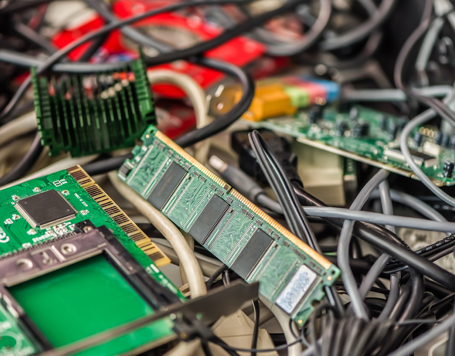

Profesor: Andres Lopez
unidades de credito: 5 u/c
código de materia: TLC-31235
salón: piso 3/15
horas a la semana: 5
descripción: En este curso se continúa con el estudio de dispositivos electrónicos fundamentales iniciado en Electrónica I, Se estudia la estructura interna, el funcionamiento y las principales características de los circuitos Electrónicos de conmutación, Las familias lógicas de uso más frecuente y los circuitos de conversión A/D y D/A. La captación del contenido de este curso, permitirá al estudiante disponer de una gran variedad de recursos para afrontar el diseño de circuitos electrónicos en una diversidad de situaciones. Es necesario que, el estudiante tenga una base sólida en aspectos relacionados con Circuitos Eléctricos, Electrónica I y Sistemas Digitales.
